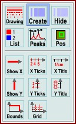
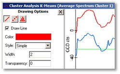

|
图谱查看器杂项视觉
|
您可以使用图谱查看器环形菜单打开这些功能。

绘图：
在查看器左侧显示图谱绘图选项。在这里您可以更改每个图谱的颜色、线条样式等：

创建：
切换到掩模创建模式。参见图谱查看器掩模操作。
将鼠标模式更改为"移动"或再次点击"创建"按钮将关闭掩模创建模式。
隐藏：
临时隐藏掩模。仅在显示用于操作的掩模的预览图谱查看器中或掩模创建模式已开启时可用。
列表：
显示图谱查看器中显示的所有图谱对象的图谱列表。
峰：
查找并标记峰，参见图谱查看器峰标记
位置：
将当前选定光谱的位置发送到所有其他查看器，以便在图像查看器中查看单个光谱、线光谱或图像光谱的位置。
显示X：
显示或隐藏X轴绘图。
X刻度：
显示或隐藏X轴上的刻度和刻度标签。
X标题：
显示或隐藏X轴标题。
显示Y：
显示或隐藏Y轴绘图。
Y刻度：
显示或隐藏Y轴上的刻度和刻度标签。
Y标题
显示或隐藏Y轴标题。
边界：
显示或隐藏坐标系顶部和右侧边界的闭合线。
网格：
显示或隐藏刻度位置处的网格线。